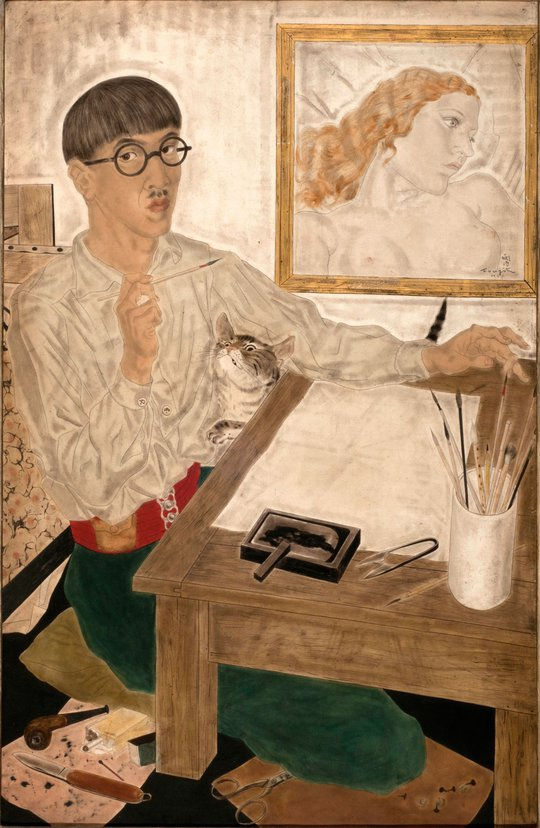

Galería: Obras más reconocidas

Bodas Místicas de Santa Catalina
Negróni, Pietro - (Zingarello) - Italia, 1554

El Peinado
Morisot, Berthe Marie Pauline - Francia - 1894

Negro Azul y Blanco
Kline, Franz - EEUU - 1959

L.E.S.
Alonso, Carlos - Argentina - 1963
Gustavo Monrroe en su Atelier
Schvartz, Marcia - Argentina - 1988

Autorretrato
Foujita, Léonard Tsuguharu - Japón - 1931
Le Moulin de la Galette
Gogh, Vincent van - Francia - (1886 - 1887)

Crucifixión de Cristo
Caranach, Lucas - Alemania - Principios del siglo XVI

Mujer del Mar
Gauguin, Paul - Francia - 1892